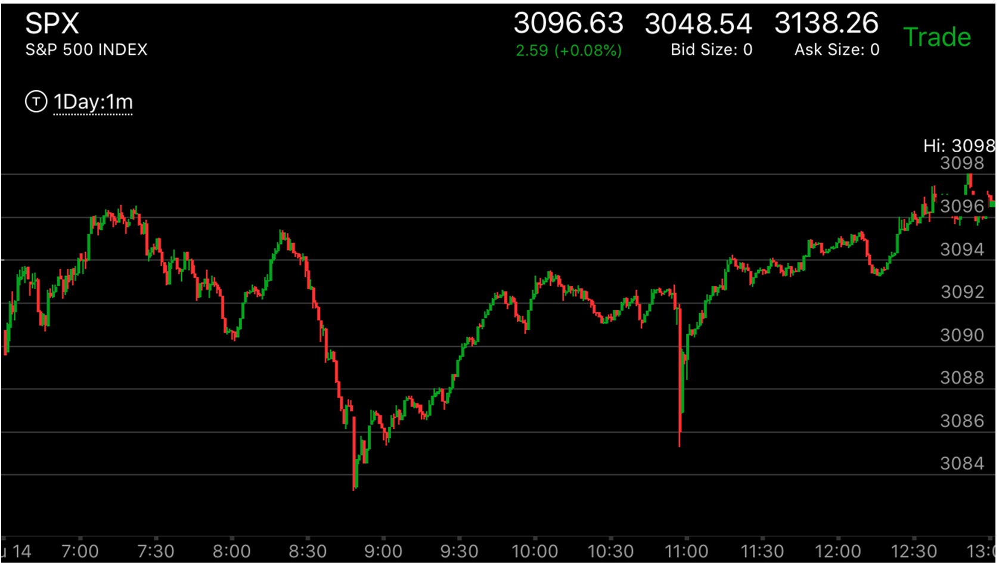
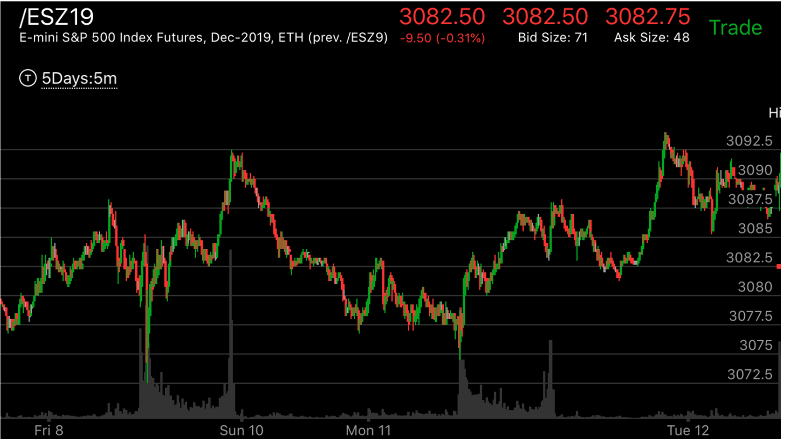
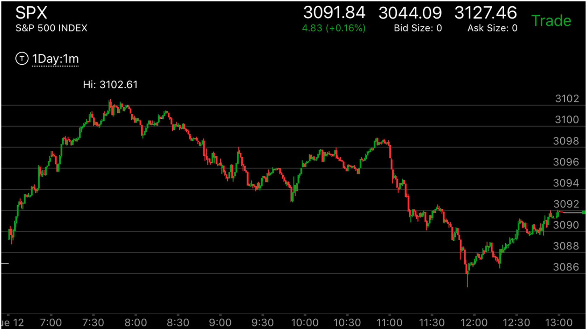
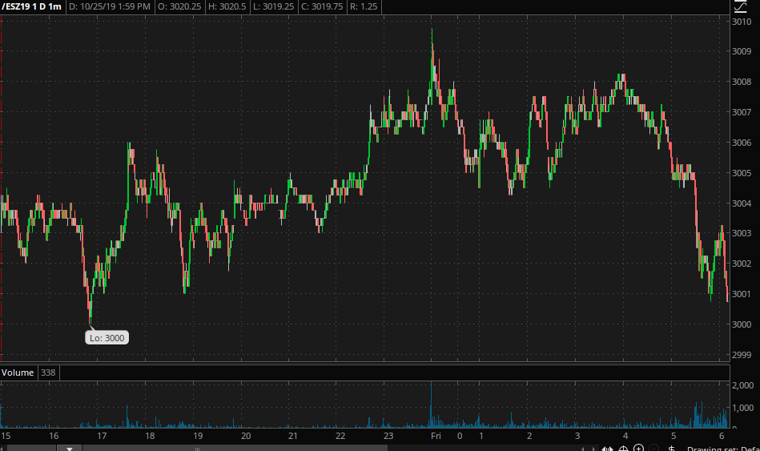
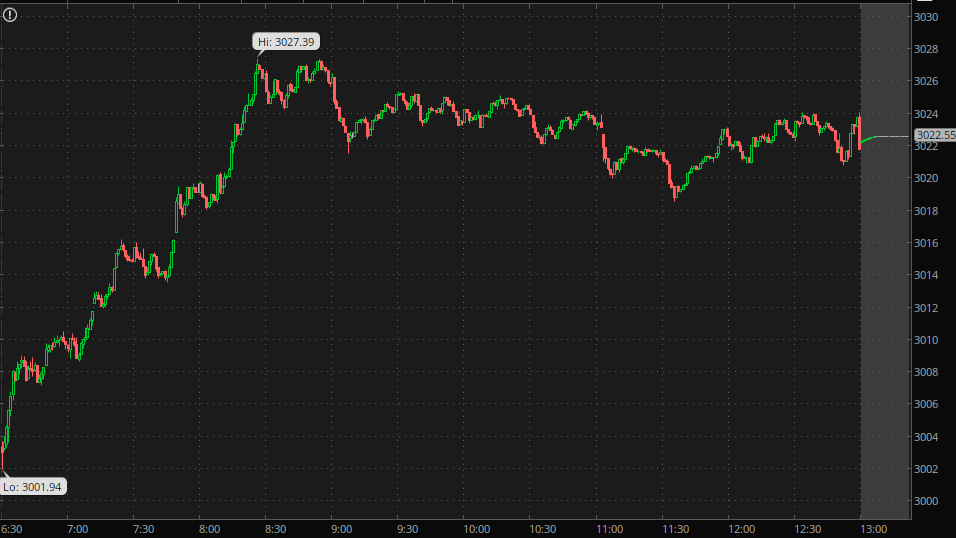
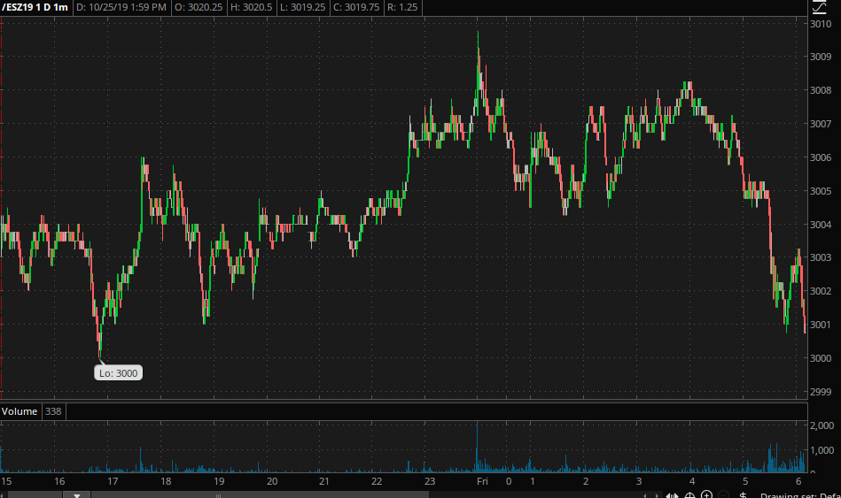
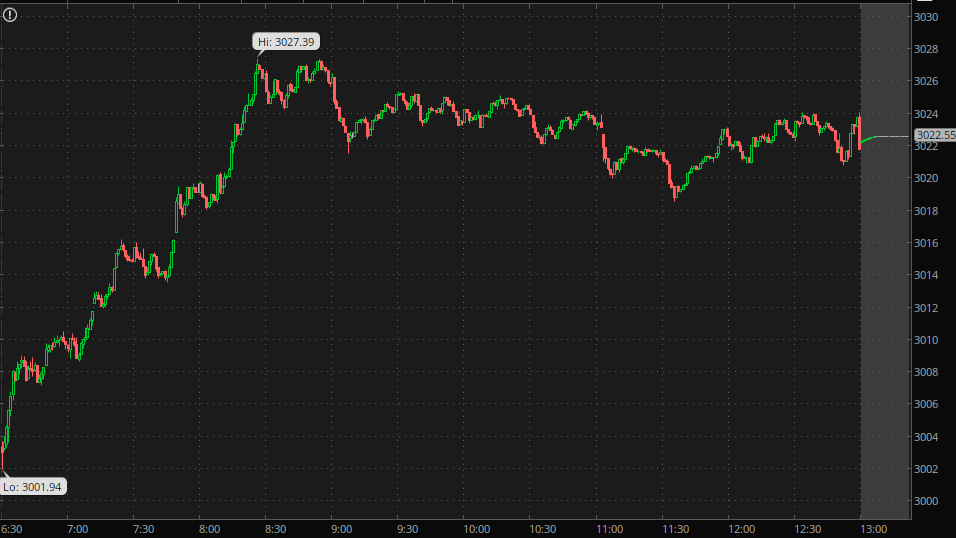
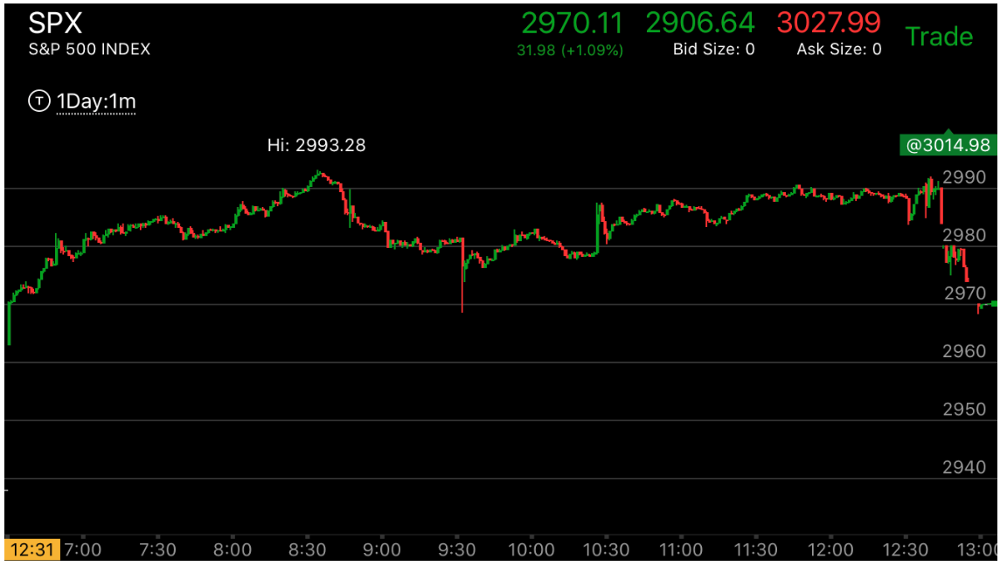
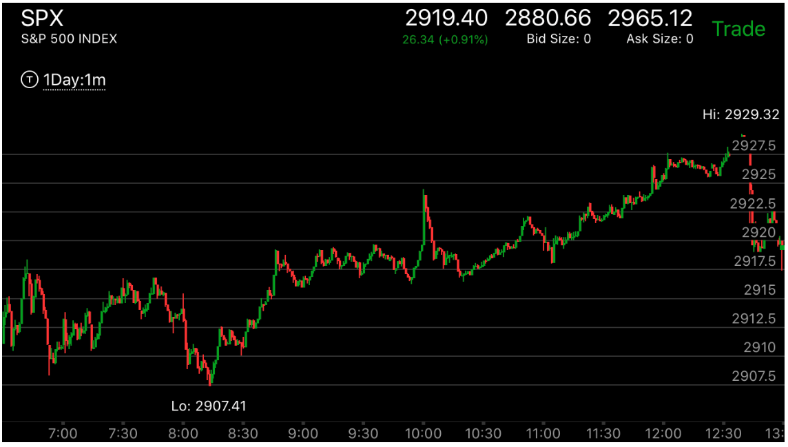

平齐目标后，反向完成走势
- 这个走势的出现，要么是大盘前面出现了可以反转的走势，或者出现了加速，需要填补真空。这时它会刚刚到达目标后，
立刻回头，回头的时候，还要它本身出现一个完成走势。这样未来它会大大超过目标。
- 这个走势关键在于，它会出现一个反向的完成走势。这个走势一定要完成。有时候，它会反向越过一个两段走势。
但是有时候也不会。关键在于它反向走势的形状。

图示：出现了两段走势后，8：45开始反弹。它不断的反弹，9：30出现了一个疑似的两段走势。它越过了3090这个前面两段走势的开始点，
所以应该算反转了。然而，它开始走低，到了11：00大跌，形成了一个下跌完成走势。这样它会继续上涨。


图示：
图一：周五开盘出现了快速下跌。这个就是前面下跌走势的结束。它很快上涨，到了3092.5.这个点是前面快速下跌的起点。
其实是一个达到目标。它再次大幅走低，周一，它开盘大跌，形成了下跌的完成走势，再次上涨。这次，它创了走势新高。超过了3092.5，到了3094.再次回头，这次它
在3085快速下跌，又成了反向完成走势。
图二：它开盘后，开始快速上涨，从3094到3096是第一浪，因为这个才越过前面的走势范围高于3094.然后再次出现了第二浪，第二浪立刻下跌，再次走高，这样在高点走平。
这个走平很特别，它其实是立刻拉回，但是又回到高点附近，然后才下跌，这个不是平时的走平的形状。这时它开始下跌通道，一路下跌，收盘后低于3085，也就是走势开始的
地方。说明是彻底反转了。

 



图示：大盘处于升势，而前一个走势的高点是3014. 大盘一定要越过这个点才算完成。
第一图，它在15：00出现了快速上涨，说明存在了反转的基础。但是没有越过3014.所以不能算。
第二图，在运行一夜后，它
在开盘的一分钟，超过了3014.立刻回头。它在回头的时候，出现了两段下跌，而且在7：30再次加速。这样它就完成了反向走势。
而它才刚刚越过前面的高点。说明它未来一定会大大超过3014这个点。8：30和9：00出现了相对弱势走势。9：00出现了两段下跌。
也完成了走势。但是它却一直没有超过3011.这个也说明了大盘处于升势，它连3011 也没有越过。
第三图，它一直在低于3010的地方运行了一夜。在为大涨积蓄力量。
第四图, 大盘一开始就快速的上涨，在前面的各种阻力点，都走平一下，然后越过。直到超过了3014后，出现了两段上涨，然后
在高点徘徊很久。这样就再次反转了。

图示：大盘必须越过2993.结果它刚刚越过就回来。收盘前大跌。形成了一个两段走势。它
也恰好反转了一个上涨的两段走势。这样它就具备了再次上涨的力量。未来一定会大幅越过2993. 而且也确实超过了。

图示：前一个走势是2923的顶点，它必须超过这个点。结果它刚刚到达就回头。回来后，
两次转折，形成了一个完成走势。这样，它未来一定会超过2923.它果然开始不断上涨，超过了2923后，自身形成了一个两段
上涨，在2929才反转。